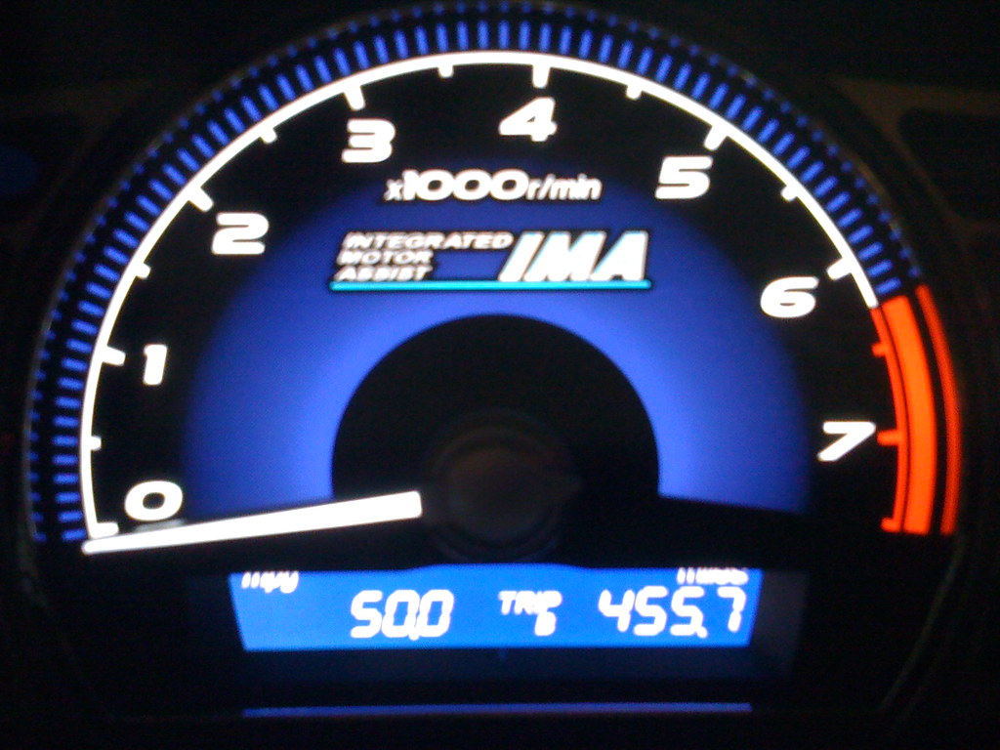
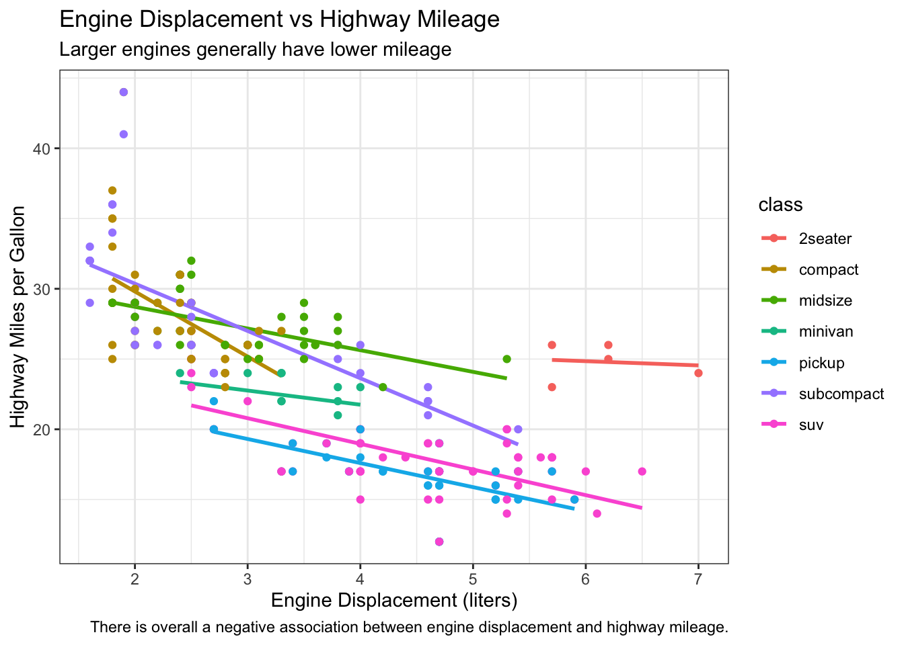
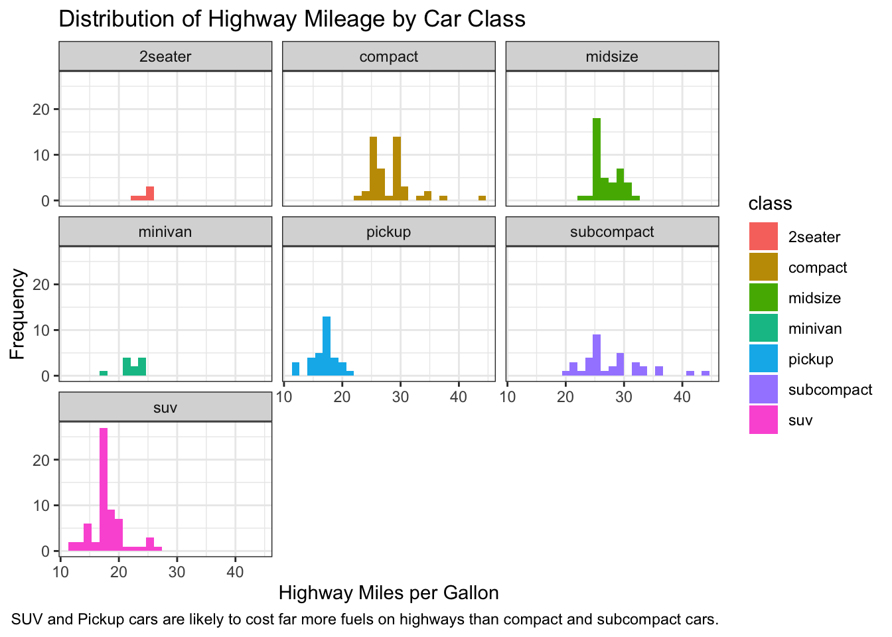
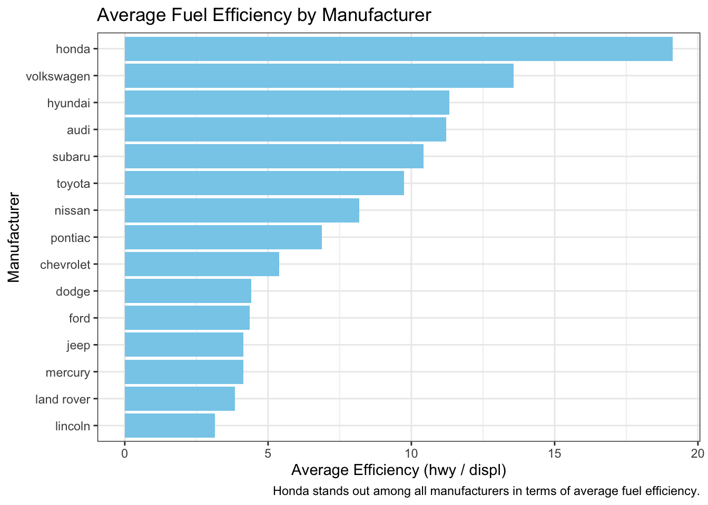

data("mpg")
mpg_filtered <- mpg %>%
filter(class != "2seater") %>%
mutate(efficiency = hwy / displ) %>%
group_by(manufacturer) %>%
summarize(`avg efficiency` = mean(efficiency, na.rm = TRUE)) %>%
arrange(desc(`avg efficiency`))Example Analysis of the MPG Dataset
1 Introduction
There are several interesting default datasets included in popular packages, for instance mpg from ggplot2 (Wickham 2016). In this analysis, I explore the relationship between vehicle characteristics (like engine displacement and highway mileage) and fuel efficiency. The intended audience is for automotive industry looking for insights into vehicle fuel economy.
The mpg dataset contains information about different models of cars and their fuel consumption. It can be accessed via the mpg dataset documentation here.

2 Data Dictionary
Some of the key variables in the dataset that I plan to utilize are:
manufacturer: Manufacturer name of the vehicledispl: Engine displacement in litershwy: Highway miles per gallonclass: Type of car (SUV, compact, etc.)
Note
Larger engines usually produce more power but probably also need to burn more fuel and air (Taylor 2008).
Here I define efficiency as hwy/displ.
3 Data Wrangling
mpg_filtered %>%
kbl(
caption = "Average Fuel Efficiency by Manufacturer",
col.names = c("Manufacturer", "Average Efficiency (hwy / displ)"),
align = "lc",
booktabs = TRUE
) %>%
kable_styling(
full_width = FALSE,
bootstrap_options = c("striped", "hover", "condensed", "responsive"),
position = "center"
) %>%
column_spec(2, bold = TRUE) | Manufacturer | Average Efficiency (hwy / displ) |
|---|---|
| honda | 19.126543 |
| volkswagen | 13.565472 |
| hyundai | 11.317965 |
| audi | 11.218609 |
| subaru | 10.431169 |
| toyota | 9.743804 |
| nissan | 8.179720 |
| pontiac | 6.883973 |
| chevrolet | 5.379397 |
| dodge | 4.411284 |
| ford | 4.365444 |
| jeep | 4.141776 |
| mercury | 4.132609 |
| land rover | 3.846873 |
| lincoln | 3.148148 |
4 Visualization
ggplot(mpg, aes(x = displ, y = hwy, color = class)) +
geom_smooth(aes(x = displ, y = hwy), method = "lm", formula = y ~ x, se = F) +
geom_point() +
labs(
title = "Engine Displacement vs Highway Mileage",
subtitle = "Larger engines generally have lower mileage",
x = "Engine Displacement (liters)", y = "Highway Miles per Gallon",
caption = "There is overall a negative association between engine displacement and highway mileage."
)
Here the overall relationship is consistent with that within each class. Sometimes a trend can appear in several groups but reverses when the groups are combined, known as the Simpson’s paradox (Wagner 1982).
ggplot(mpg, aes(x = hwy, fill = class)) +
geom_histogram(bins = 25) +
facet_wrap(~class) +
labs(
title = "Distribution of Highway Mileage by Car Class",
x = "Highway Miles per Gallon", y = "Frequency",
caption = "SUV and Pickup cars are likely to cost far more fuels on highways than compact and subcompact cars."
)
Tip
Faceting using facet_wrap() in ggplot2 plot multiple small plots side-by-side, allowing us to visualize data grouped by categories, making comparisons easier.
ggplot(mpg_filtered, aes(x = reorder(manufacturer, `avg efficiency`), y = `avg efficiency`)) +
geom_col(fill = "skyblue") +
coord_flip() +
labs(
title = "Average Fuel Efficiency by Manufacturer",
x = "Manufacturer", y = "Average Efficiency (hwy / displ)",
caption = "Honda stands out among all manufacturers in terms of average fuel efficiency."
)
5 Conclusion
From this simple analysis, I can observe that engine displacement can definitively inversely impact highway mileage. Honda cars’ performances is distinguishable among all manufacturers in terms of average fuel efficiency. Manufacturers focusing on smaller engines on compact cars tend to achieve better fuel efficiency. Further analysis could include electric and hybrid vehicles to see how they compare.
6 Function Summary
Here is a list of functions I used from each package:
From dplyr and tidyr: filter(), mutate(), group_by(), summarize(), arrange()
From ggplot2: geom_point(), geom_smooth(), geom_col(), geom_histogram(), facet_wrap()
References
Taylor, Alex MKP. 2008. “Science Review of Internal Combustion Engines.” Energy Policy 36 (12): 4657–67.
Wagner, Clifford H. 1982. “Simpson’s Paradox in Real Life.” The American Statistician 36 (1): 46–48.
Wickham, Hadley. 2016. Ggplot2: Elegant Graphics for Data Analysis. Springer-Verlag New York.